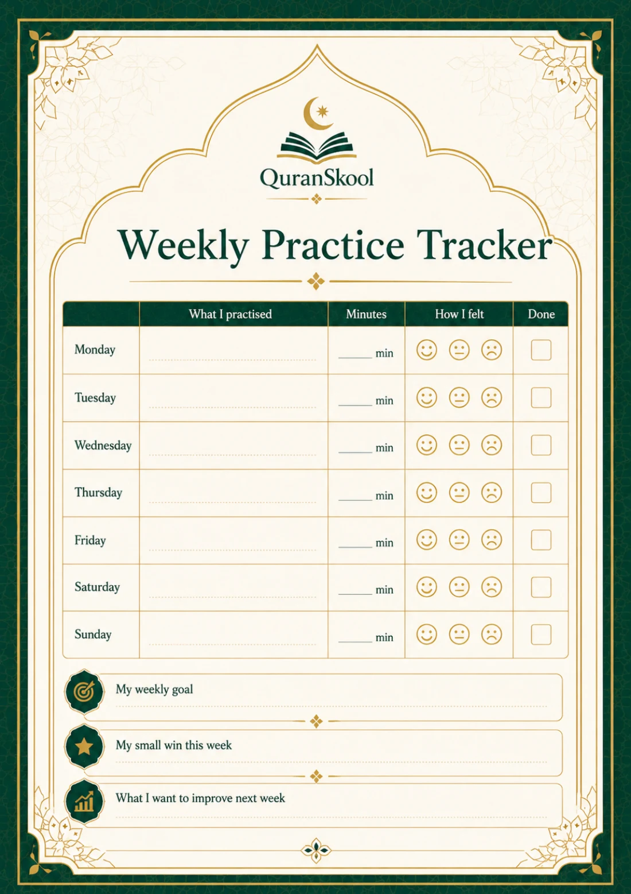
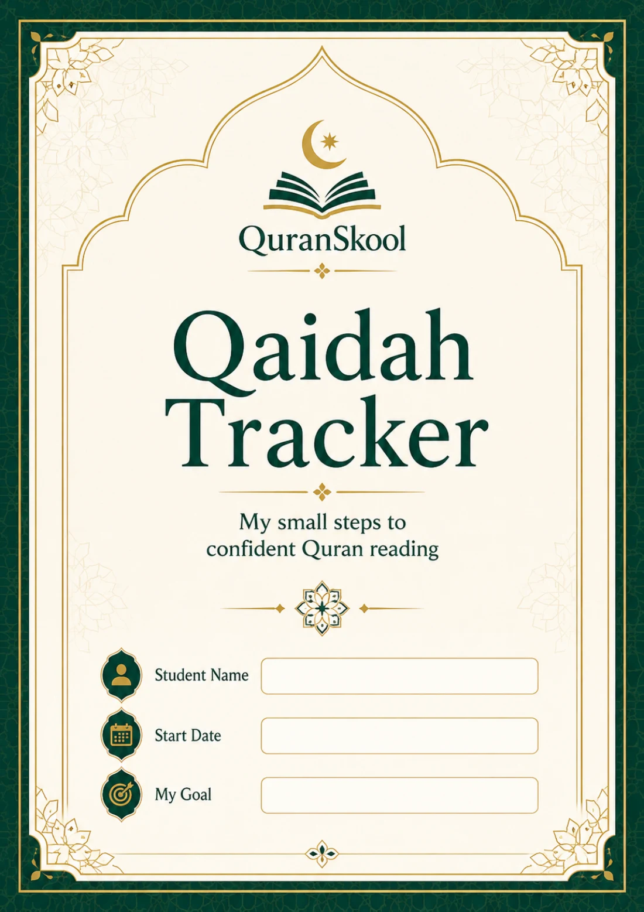
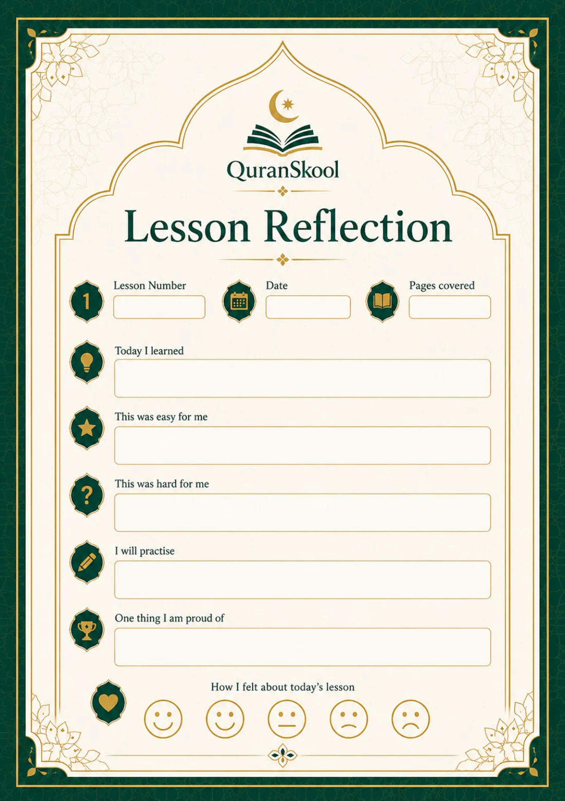

Make progress visible.
Record the letters you recognise, the sounds you’re practising, and the Qaidah pages you’ve worked through.
FOR EVERY SMALL STEP FORWARD
Give your Qaidah journey a place to grow. A beautifully organised, 53-page printable tracker for practice, progress, and the moments worth celebrating.


ACTUAL PAGES FROM THE TRACKER
MORE THAN A TICK ON A PAGE
Which letters need another look? What went well in today’s lesson? What comes next? Keep those little details together, so each lesson has a place to build from.
Record the letters you recognise, the sounds you’re practising, and the Qaidah pages you’ve worked through.
Use weekly logs to note what you practised, how long you spent, and how it felt. Small efforts deserve to be noticed.
Capture lesson notes, review the month, and mark milestones as your confidence grows.
OPEN IT UP
Take a closer look at selected pages from the actual tracker. Explore the foundations, your practice routine, and the milestones ahead.
Selected pages from the 53-page PDF. Tap any page to enlarge.
YOUR LEARNING, ALL TOGETHER
One companion for the different parts of learning Qaidah. Follow your lessons, return to tricky areas, and keep a record of the work you put in.
Includes repeated practice and reflection pages, so there’s room to keep going.
Personal details and Qaidah goals.
Arabic letters, Harakat & Tajweed basics, joining letters and word building.
Pronunciation, reading fluency, mistakes & fixes, and Qaidah page progress.
Weekly practice logs, lesson reflections, and monthly progress reviews.
A milestones page, Qaidah completion check, and certificate of completion.

A SIMPLE ROUTINE, NOT ANOTHER TASK
Look back at your notes and choose something you want to work on.
Record the pages or skills you practised and what you’d like to revisit.
Review your progress, recognise your effort, and set your next small goal.
ONE TRACKER. A SHARED JOURNEY.
Keep your goals, practice and reflections in a single place as you work through Qaidah.
Use the pages to talk about practice, celebrate effort and notice what needs more support.
Use the progress and reflection pages as a starting point for feedback during lessons.
THE QURANSKOOL QAIDAH TRACKER
Bring a little more structure, reflection and encouragement to your Qaidah journey.
YOUR QAIDAH COMPANION
Start with intention.
Keep going with purpose.
Explore the actual pages above.
BEFORE YOU BEGIN
It’s a 53-page PDF designed to help you organise your Qaidah learning. It includes skill trackers, page-progress tables, practice logs, lesson reflections, reviews, milestones and a completion certificate.
It’s a learning companion to use alongside your Qaidah book and lessons. The tracker helps you record and review your progress; it does not replace teaching or pronunciation feedback.
Yes. It’s a PDF with pages laid out for printing and filling in by hand. Use your printer’s “Fit to page” setting if needed, and check a sample page before printing the whole tracker.
The supplied PDF is not an interactive form. You can write on a printed copy, or use a compatible PDF annotation app to add notes digitally.
Yes. The cover and sample pages shown here are taken directly from the QuranSkool Qaidah Tracker PDF.
The included certificate is a way to recognise completion of the Qaidah journey. It is not an accredited qualification or an ijazah.